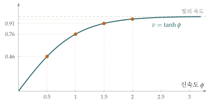

STEP III 2019, 문제 2
다음으로 넘어가기 전에 문제를 먼저 읽어 보자. 이 문제는 OCR에서 내려받을 수 있는 2019년 STEP 문제지 모음(zip 파일)의 STEP III 문제지에 있다: www.ocr.org.uk/Images/696590-2019-past-papers.zip
도입
\(e^x\)가 무엇인지 어떻게 아는가? 학교에서는 복리 이자를 통해, 또는 자기 자신이 도함수(derivative)인 함수로, 또는 \(\lim (1 + x/n)^n\)으로 소개한다. 이 문제는 또 다른 답을 제시한다. \(e^{kx}\)는 덧셈을 곱셈으로 바꾸는, 즉 \(\mathrm{f}(x + y) = \mathrm{f}(x)\mathrm{f}(y)\)를 만족하는 유일한 미분가능(differentiable) 함수이다. 이 규칙 하나와 수 \(\mathrm{f}'(0)\) 하나만으로 함수가 완전히 결정된다.
두 번째 부분은 더 낯선 규칙 \(\mathrm{g}(x + y) = \frac{\mathrm{g}(x) + \mathrm{g}(y)}{1 + \mathrm{g}(x)\mathrm{g}(y)}\)에 대해 같은 일을 한다. 이 식이 낯익어 보인다면 그럴 만하다. 이것은 빛의 속도를 \(1\)로 놓았을 때, 특수 상대성 이론(special relativity)에서 속도를 더하는 아인슈타인(Einstein)의 규칙이다. 이 규칙이 강제하는 함수는 \(\tanh\)이며, 이것이 어떤 것도 빛의 속도 이상으로 가속될 수 없는 이유를 설명해 준다.
시작하기 전에
\(\mathrm{f}(x + y) = \mathrm{f}(x)\mathrm{f}(y)\)처럼 미지수가 함수인 방정식을 함수방정식(functional equation)이라고 한다.
이 방정식은 모든 \(x\)와 \(y\)에 대해 성립한다. 가장 먼저 시도해 볼 만한 유용한 것은 무엇인가?
특수한 값이다. \(y = 0\)(또는 \(x = y\), 또는 \(y = -x\))으로 놓으면 적은 노력으로 많은 정보를 얻을 때가 많다. 두 부분 모두 이렇게 시작한다.
차근차근 풀기
단계 1 0에서의 값
\(x = y = 0\)을 대입하면 \(\mathrm{f}(0) = \mathrm{f}(0)^2\)이므로 \(\mathrm{f}(0) = 0\) 또는 \(1\)이다.
\(\mathrm{f}(0) = 0\)이면 무엇이 잘못되는가?
\(\mathrm{f}(0) = 0\)이면 \(y = 0\)을 대입하여 모든 \(x\)에 대해 \(\mathrm{f}(x) = \mathrm{f}(x)\mathrm{f}(0) = 0\)을 얻는다. 그러면 \(\mathrm{f}\)는 항등적으로 0이고 \(\mathrm{f}'(0) = 0\)이 되어 \(\mathrm{f}'(0) = k \neq 0\)에 모순이다. 따라서 \(\mathrm{f}(0) = 1\)이다.■
단계 2 0에서의 미분계수로부터 모든 점에서의 도함수 구하기
\((*)\)에서 \(\mathrm{f}(x + h) = \mathrm{f}(x)\mathrm{f}(h)\)로 써 보자. 극한 밖으로 무엇을 꺼낼 수 있는가?
\[\begin{aligned} \mathrm{f}'(x) &= \lim_{h \to 0} \frac{\mathrm{f}(x)\mathrm{f}(h) - \mathrm{f}(x)}{h} = \mathrm{f}(x)\lim_{h \to 0}\frac{\mathrm{f}(h) - 1}{h} \\ &= \mathrm{f}(x)\lim_{h \to 0}\frac{\mathrm{f}(0 + h) - \mathrm{f}(0)}{h} = \mathrm{f}(x)\,\mathrm{f}'(0) = k\,\mathrm{f}(x). \qed \end{aligned}\] 함수방정식 덕분에 \(0\) 근처에서의 성질을 다른 모든 점으로 옮길 수 있다.
단계 3 \(\mathrm{f}' = k\mathrm{f}\) 풀기
\(\mathrm{u}(x) = \mathrm{f}(x)e^{-kx}\)를 생각하자. 그러면 \(\mathrm{u}'(x) = \bigl(\mathrm{f}'(x) - k\mathrm{f}(x)\bigr)e^{-kx} = 0\)이므로 \(\mathrm{u}\)는 상수이고, \(\mathrm{u}(0) = \mathrm{f}(0) = 1\)이다. 따라서 \[\mathrm{f}(x) = e^{kx}. \qed\] (변수분리(separation of variables)로 \(\int \frac{\mathrm{d}\mathrm{f}}{\mathrm{f}} = \int k\,\mathrm{d}x\)를 계산해도 같은 답을 얻지만, 이때는 \(\mathrm{f}(x) \neq 0\)이 필요하다. \(\mathrm{u}\)를 쓰는 요령은 이런 걱정을 피하게 해 준다.)
단계 4 두 번째 규칙
\(\mathrm{g}\)에 대한 규칙에 \(y = 0\)을 대입해 보자. 이것으로 \(\mathrm{g}(0)\)에 대해 무엇을 알 수 있는가? \(|\mathrm{g}(x)| < 1\)은 어디에서 쓰이는가?
\(y = 0\)이면 \(\mathrm{g}(x)\bigl(1 + \mathrm{g}(x)\mathrm{g}(0)\bigr) = \mathrm{g}(x) + \mathrm{g}(0)\)이고, 이를 정리하면 \(\mathrm{g}(0)\bigl(\mathrm{g}(x)^2 - 1\bigr) = 0\)이다. \(|\mathrm{g}(x)| < 1\)이므로 괄호 안은 결코 0이 아니고, 따라서 \(\mathrm{g}(0) = 0\)이다.
이제 규칙을 이용해 \(\mathrm{g}(x + h) - \mathrm{g}(x)\)를 계산하고 정리한 다음, \(h\)로 나누고 \(h \to 0\)으로 보내 보자.
\[\mathrm{g}(x + h) - \mathrm{g}(x) = \frac{\mathrm{g}(x) + \mathrm{g}(h) - \mathrm{g}(x) - \mathrm{g}(x)^2\mathrm{g}(h)}{1 + \mathrm{g}(x)\mathrm{g}(h)} = \frac{\mathrm{g}(h)\bigl(1 - \mathrm{g}(x)^2\bigr)}{1 + \mathrm{g}(x)\mathrm{g}(h)}.\] \(h\)로 나눈다. \(h \to 0\)일 때 \(\frac{\mathrm{g}(h)}{h} = \frac{\mathrm{g}(h) - \mathrm{g}(0)}{h} \to \mathrm{g}'(0) = k\)이고, \(\mathrm{g}(h) \to \mathrm{g}(0) = 0\)(미분가능한 함수는 연속이다)이므로 분모는 \(1\)로 수렴한다. 따라서 \[\mathrm{g}'(x) = k\bigl(1 - \mathrm{g}(x)^2\bigr). \qed\]
단계 5 미분방정식 풀기
변수를 분리하자. \(|g| < 1\)에서 도함수가 \(\frac{1}{1 - g^2}\)인 함수는 무엇인가?
\(|\mathrm{g}| < 1\)이므로 나눌 수 있다: \(\dfrac{\mathrm{g}'}{1 - \mathrm{g}^2} = k\). 함수 \(\operatorname{artanh} g = \frac12\ln\frac{1 + g}{1 - g}\)의 도함수는 \(\frac{1}{1 - g^2}\)이므로 \(\frac{\mathrm{d}}{\mathrm{d}x}\operatorname{artanh}\mathrm{g}(x) = k\)이고 \(\operatorname{artanh}\mathrm{g}(x) = kx + C\)이다. \(\mathrm{g}(0) = 0\)에서 \(C = 0\)이므로 \[\mathrm{g}(x) = \tanh kx. \qed\] 확인: 덧셈정리 \(\tanh(A + B) = \dfrac{\tanh A + \tanh B}{1 + \tanh A\tanh B}\)는 주어진 규칙과 정확히 같다.
돌아보기
특수한 값부터. \(y = 0\)을 대입하여 \(\mathrm{f}(0)\)과 \(\mathrm{g}(0)\)을 구했다.
한 점에서 모든 점으로. 덧셈 법칙이 \(0\)에서의 미분계수를 모든 \(x\)로 옮겨 주었고, 이로써 함수방정식이 미분방정식(differential equation)으로 바뀌었다.
유일성(uniqueness). 이 논증은 \(e^{kx}\)와 \(\tanh kx\)가 조건을 만족함을 확인하는 데 그치지 않고, 이들이 유일한 가능성임을 보인다. 바로 이 점이 함수방정식을 하나의 정의로 만들어 준다.
숨은 수학
일상생활에서 기차가 속도 \(u\)로 움직이고 그 안에서 앞쪽으로 속도 \(v\)로 걸어가면, 지면에 대한 속도는 \(u + v\)이다. 아인슈타인은 1905년에 이것이 근사일 뿐임을 보였다. \(c\)를 빛의 속도라 할 때, 올바른 규칙은 \[u \oplus v = \frac{u + v}{1 + uv/c^2}.\] 이다. 속도를 \(c\)에 대한 비율로 나타내면, 이것은 정확히 \(\mathrm{g}\)에 대한 규칙이다. 우리의 결과는 각 속도를 \(v = \tanh\phi\)로 쓰면, 속도의 합성이 \(\phi\) 값들을 더하는 것이 된다는 뜻이다. 양 \(\phi = \operatorname{artanh} v\)를 신속도(rapidity)라고 한다. 로켓 엔진이 한 번 가속할 때마다 일정한 양의 신속도가 더해지지만, 모든 \(\phi\)에 대해 \(\tanh\phi < 1\)이므로 속도는 빛의 속도에 점점 가까워질 뿐 결코 도달하지 못한다(그림 3.8.1). \(0.9c\)와 \(0.9c\)를 합성하면 \(1.8c\)가 아니라 \(\frac{1.8}{1.81}c \approx 0.9945c\)가 된다.

코시의 함수방정식
가장 단순한 함수방정식은 \(\mathrm{f}(x + y) = \mathrm{f}(x) + \mathrm{f}(y)\)로, 1821년에 코시(Cauchy)가 연구하였다. \(\mathrm{f}\)가 미분가능하면 이 문제의 방법으로 \(\mathrm{f}(x) = kx\)임을 보일 수 있다. 사실 연속성(continuity)만으로도 충분하다. 그러나 정칙성 가정이 전혀 없으면, 그래프가 평면 전체에 조밀하게 흩어져 있는 전혀 다른, 극도로 기괴한 해들이 존재한다. Georg Hamel이 1905년에 이러한 해를 구성하였는데, 그 구성에는 선택공리(axiom of choice)가 필요하며, 그중 어느 것도 명시적으로 적어 낼 수 없다. 이 문제가 \(\mathrm{f}\)가 미분가능하다고 굳이 못 박는 이유 중 하나가 이것이다. 이 가정은 형식적인 것이 아니다.
준동형사상
\(\mathrm{f}(x + y) = \mathrm{f}(x)\mathrm{f}(y)\)는 \(\mathrm{f}\)가 실수의 덧셈을 양의 실수의 곱셈으로 바꾸면서 두 구조를 모두 보존한다는 뜻이다. 대학 1학년 대수학의 언어로 말하면, \(\mathrm{f}\)는 \((\mathbb{R}, +)\)에서 \((\mathbb{R}_{>0}, \times)\)로 가는 군 준동형사상(group homomorphism)이고, 로그는 그 역함수이다. 수학에서 가장 중요한 함수들 중 상당수가 이런 식으로, 즉 그것이 보존하는 구조로 특징지어진다. 7.6 절에서는 \(\tanh\)의 기하학적 의미를 만나게 된다. \(\tanh\)는 “쌍곡각”을 재며, 그 덧셈 법칙은 쌍곡 회전의 합성에서 나온다.
사고 기술
공식 대신 함수가 따르는 규칙으로 함수를 기술하고, 그 규칙을 따르는 함수가 하나뿐임을 증명한다.
수학자들은 \(\exp\), \(\sin\), \(\cos\)를 비롯한 많은 함수를 흔히 이렇게 생각한다. 공식으로서가 아니라 함수방정식이나 미분방정식의 유일한 해로서 말이다. 이렇게 보면 이 함수들을 어떻게 계산하는지뿐 아니라 왜 중요한지도 알 수 있다.
더 도전하기
탄젠트 규칙. \(\mathrm{g}\)가 미분가능하고 \(\mathrm{g}'(0) = k \neq 0\)이며, 양변이 정의될 때마다 \(\mathrm{g}(x + y) = \dfrac{\mathrm{g}(x) + \mathrm{g}(y)}{1 - \mathrm{g}(x)\mathrm{g}(y)}\)라고 하자. \(\mathrm{g}'(x) = k\bigl(1 + \mathrm{g}(x)^2\bigr)\)임을 보이고, \(x = 0\) 근처에서 \(\mathrm{g}(x) = \tan kx\)임을 이끌어 내어라.
코시의 방정식. \(\mathrm{f}\)가 미분가능하고 모든 \(x\), \(y\)에 대해 \(\mathrm{f}(x + y) = \mathrm{f}(x) + \mathrm{f}(y)\)이면 \(\mathrm{f}(x) = kx\)임을 보여라.
도함수 없이. 심화 \(\mathrm{f}(x + y) = \mathrm{f}(x)\mathrm{f}(y)\)이고 \(\mathrm{f}(1) = a > 0\)이라는 것만 가정하자. 양의 정수 \(n\)에 대해 \(\mathrm{f}(n) = a^n\)임을 보이고, 다음으로 \(\mathrm{f}(1/n) = a^{1/n}\)임을, 그다음 모든 양의 유리수 \(q\)에 대해 \(\mathrm{f}(q) = a^q\)임을 보여라. (더 나아가려면 왜 연속성이 필요한가?)
로켓 과학. 어떤 로켓은 분사할 때마다 현재 기준틀에 대해 속도를 \(0.5c\)만큼 높일 수 있다. 정지 상태에서 출발할 때, \(2\)번, \(3\)번, \(4\)번 분사한 후의 (출발점에 대한) 속도는 얼마인가? 신속도를 이용하여라.
더 읽을거리
Christopher Small, Functional Equations and How to Solve Them (Springer). 함수방정식과 그 풀이법. 문제 풀이를 즐기는 사람을 위한 읽기 쉬운 입문서이다.
Edwin Taylor & John Wheeler, Spacetime Physics (W. H. Freeman). 시공간 물리학. 특수 상대성 이론의 고전적인 입문서로, 처음부터 끝까지 신속도를 사용한다.
Tom Körner, Calculus for the Ambitious (Cambridge University Press). 야심 찬 이들을 위한 미적분. 지수함수와 삼각함수를 그 성질로부터 정의하며, 바로 이 절의 정신과 같다.